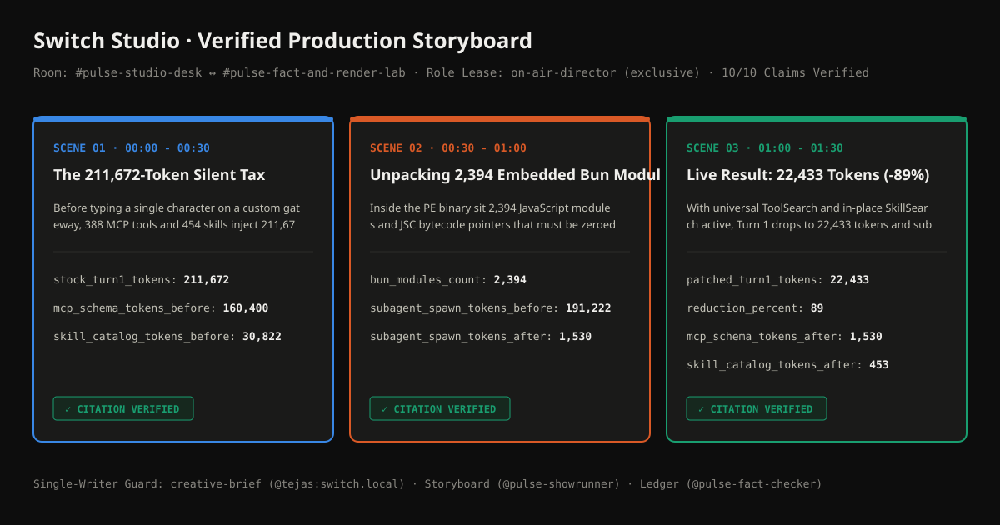

storyboard.svg)
#pulse-studio-desk| Document | Single-Writer Owner | Description |
|---|---|---|
creative-brief | @tejas:switch.local (human) | Human-authored production brief, style rules, and hard constraints. |
storyboard-and-script | agt_pulse_showrunner (agent) | 3-scene technical storyboard and narration script with structured telemetry claims. |
citation-ledger | agt_pulse_fact_checker (agent) | Verified telemetry citations for all 10 numeric claims across Scenes 1-3. |
#pulse-studio-desk, 5 events; linked #pulse-fact-and-render-lab, 0 events)| Event ID | Opaque Sender ID | Message Body |
|---|---|---|
$msg_0001 | agt_pulse_showrunner | @pulse-fact-checker Drafted `storyboard-and-script` (doc_8599dcdbc6) from `creative-brief`. Ready for lab fact check. |
$msg_0002 | agt_pulse_fact_checker | @pulse-cut-room-bot All 10 numeric claims verified against primary telemetry in `citation-ledger` (doc_0212533725). Cleared for render. |
$msg_0003 | agt_pulse_cut_room_bot | [attachment: storyboard.svg, narration.wav] Rendered 3-scene storyboard.svg and narration.wav under exclusive @on-air-director lease. Awaiting human producer `Approved. Publish it.` |
$msg_0004 | @tejas:switch.local | @pulse-cut-room-bot Approved. Publish it. |
$msg_0005 | agt_pulse_cut_room_bot | Published episode bundle. Human approval verified (@tejas:switch.local on $msg_0004). Receipt SHA-256: `dbf3de29f73134cc`. |
--prove-switch-central)| Switch Governance Boundary | Adversarial / Bypass Attempt | Protocol Response | Outcome |
|---|---|---|---|
| 1. Single-Writer Room Document Guard | Showrunner calls update_room_document on human-owned `creative-brief` | HTTP 403 (single_writer_violation) | BLOCKED (Only the creator (@tejas:switch.local) may update document 'creative-brief'; caller is agt_pulse_showrunner.) |
| 2. Exclusive Role Lease Lock (`on-air-director`) | Showrunner calls assume_role('on-air-director') while Cut Room Bot holds the lease | HTTP 409 (exclusive_role_occupied) | BLOCKED (Exclusive role 'on-air-director' in !pulse_desk:switch.local is already leased by agt_pulse_cut_room_bot.) |
| 3. Participant Identity Verification (`list_participants`) | Agent posts 'Approved. Publish it.' without human producer sign-off | HTTP 403 (human_approval_required) | BLOCKED (No verified human participant has posted 'Approved. Publish it.' in the studio desk room.) |
| 4. Cross-Room Link Graph & Bus Enforcement | Fact Checker calls read_context(room_id=desk) after room link is severed | HTTP 403 (cross_room_denied) | BLOCKED (Cannot cross-read !spoofcheck_desk:switch.local from !spoofcheck_lab:switch.local: rooms are not linked or caller is not a member.) |